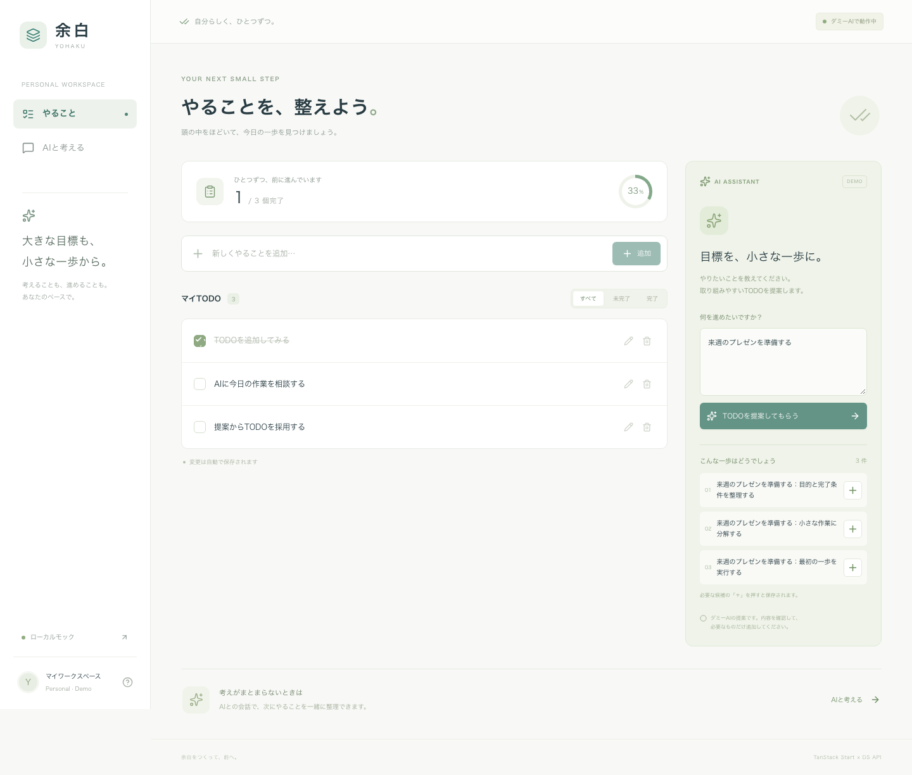
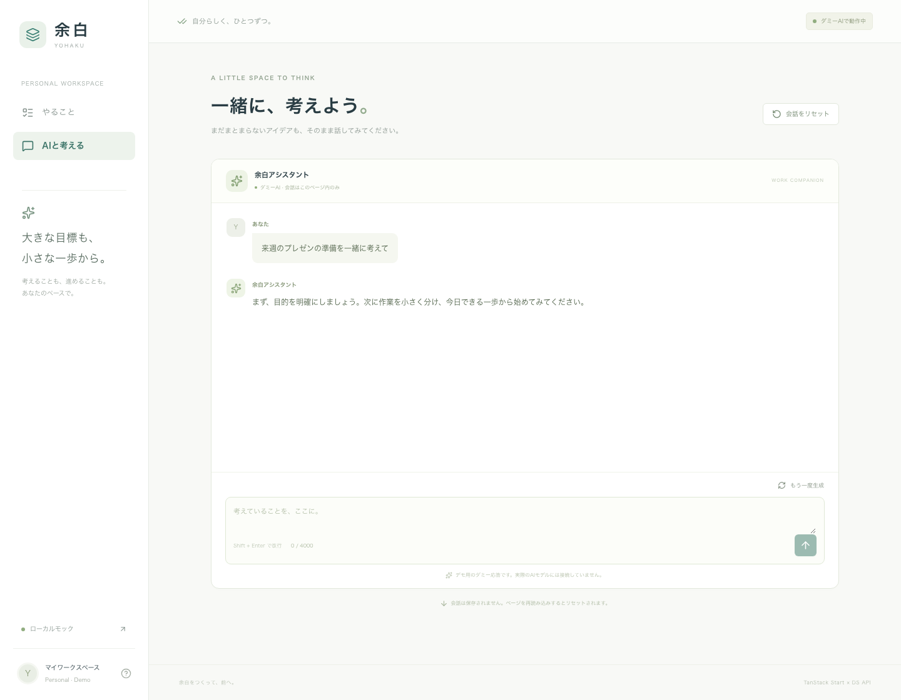
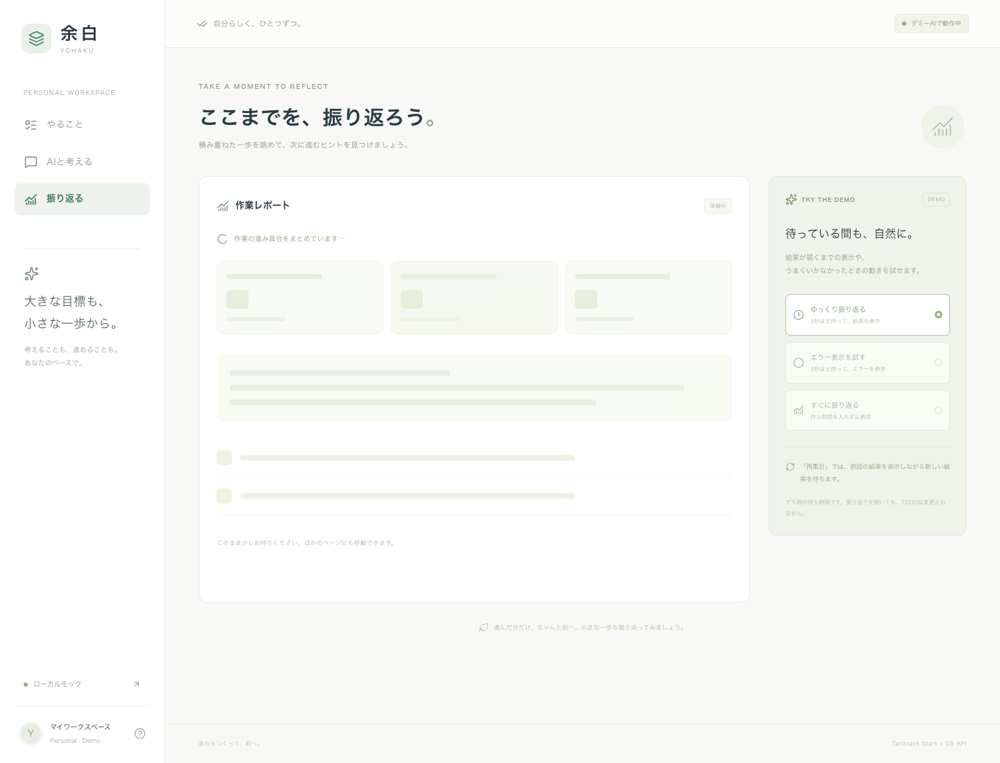
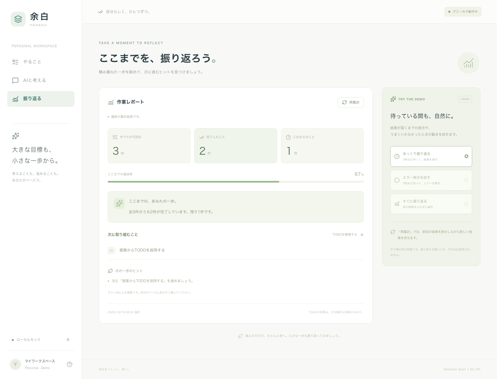

TANSTACK START × INDEPENDENT DS API
アプリの責務を整えて、
DSと独立して開発する。
「余白」は、TODO管理とAIチャットを通して、Startが業務データを持ち、PythonのDS処理をAPIとして交換する構成を確かめるデモです。
アプリを開く ↗ 起動手順 設計の詳細
まず、動く画面から。
01
やることを整える
TODOの追加、編集、完了切替、削除。URLで絞り込み、再読込してもPostgreSQLのデータが残ります。
02
候補を見てから選ぶ
目標からTODO候補を提案。取得だけでは保存せず、利用者が選んだ候補を通常のTODOとして保存します。
03
途中から受け取る
工程とテキストがサーバーから順に到着。完了前の表示、停止、再生成、失敗を体験できます。

実装済みアプリの画面。実AIには接続せず、共通fixtureによるダミー応答で動作します。
Startにも、バックエンドの層を持つ。
Server
Functionsはリクエストの入口です。業務判断、DB操作、外部通信をそこへ集めず、責務ごとに配置しています。sdd-backend-templateのrouters
→ services → crud / apisと同じ依存の向きです。
画面 / Query→Server Functions→services→repository / DS client
| 責務 |
配置 |
変更の例 |
| 入口と入出力 |
apps/web/src/server/functions |
入力検証、公開エラーへの変換 |
| 業務処理 |
apps/web/src/server/services |
対象の未検出判定、ユースケース |
| 永続化 |
packages/db |
SQL、schema、migration |
| 外部通信 |
packages/ds-client |
接続、timeout、応答検証 |
| 依存の組み立て |
server/dependencies |
DS_MODEや接続先を選択 |
画面からSQLやDSのfetchを書かないことを自動チェックし、Startのimport
protectionでもサーバー専用パッケージをブラウザから保護します。サービスは小さなinterfaceを受け取り、DBやHTTPの具体実装に依存しません。
動いているServer Function：TODO追加
export const createTodoFn = createServerFn({ method: 'POST' })
.validator((input: z.input<typeof createTodoInputSchema>) => input)
.handler(({ data }) =>
publicResult(async () => {
const input = validate(createTodoInputSchema, data);
const { getTodoService } = await import('../dependencies/index.server');
return getTodoService().create(input);
}),
);
実装ファイルを読む。入口で検証し、依存を組み立てたサービスへ渡します。DB処理はこの関数に書いていません。
mock → HTTP。変えるのは設定。
SWEの開発
DS_MODE=mock。Pythonなしで画面、DB、候補採用、ストリーミングの開発を進めます。
合意する境界
候補提案はOpenAPIのJSON契約。チャットはAG-UIの入力と基本イベント。mockとHTTPを同じ契約で検証します。
DSの開発
DS_MODE=http。Pythonのlogic内の関数を変更します。PythonへアプリDBの資格情報やTanStackの画面型を渡しません。
# Pythonなしで体験
docker compose up --build -d
# Pythonを加え、同じUIを使う
DS_MODE=http docker compose --profile http up --build -d
AG-UIとStart、それぞれの役割。

会話状態はTanStack AI、配信とサーバー入口はStart、Pythonとのイベント境界はAG-UI。
ブラウザのuseChat fetcherからStartのPOST Server
Functionを呼びます。Startが入力を標準のRunAgentInputへ整え、DSクライアントから受け取ったイベントを検証してSSEで返します。まとめて取得した文字列をブラウザで演出する実装ではありません。
RUN_STARTED→STEP / TEXT→RUN_FINISHED または RUN_ERROR
終端のない切断は成功扱いにせず、停止は上流HTTPとPythonの生成器へ伝えます。AG-UIのすべての機能を実装した互換性は主張せず、テキスト・工程・終了・エラーに対応範囲を限定しています。
3秒待つ処理も、画面の一部で受け止める。
作業レポートではStartがTODOを集計し、DSへ必要な情報だけを渡します。Pythonまたはmockが3秒待つ間も、見出しと操作欄を先に表示します。結果欄だけをSuspenseで待ち、再集計はQueryのisFetchingで前回の結果を残します。

初回は結果欄だけを待機表示にする。見出しと応答条件は先に表示。

集計はStart、文章の生成はDS。レポートを開いてもTODOは変更しない。
// loader: 取得を開始し、ページの表示は待たない
void context.queryClient.prefetchQuery(reportQueryOptions(scenario));
// 初回待機はSuspense、同じ条件の再取得はQueryが管理
const { data, isFetching, error, refetch } =
useSuspenseQuery(reportQueryOptions(scenario));
取得用useEffectやloading専用stateを増やさず、待機・再取得・失敗回復を扱います。これはReact・Query・Routerの組み合わせによる効果で、Startは型付きサーバー関数とSSRの境界を提供します。初回エラー境界や再試行のコードも含めた説明は待機状態の実装を参照してください。
WebとDSの置き場所を、要件から選ぶ。
まずはStartとPythonを別々のECSサービスに。DSのライブラリが大きくなったらPythonだけのCPU・RAMを増やし、GPUが必要ならDSだけをGPU環境へ移します。標準Node・Pythonのコンテナなので、オンプレDockerも配置の候補です。
| 条件 |
構成案 |
費用を左右するもの |
| 小さく試す |
EC2一台に別コンテナ |
VM常設、自主管理 |
| CPU型の本番基準 |
Start / DSを別ECS＋RDS |
各taskの台数・サイズ |
| Webのアクセスが変動 |
StartをWeb Functions、DSはECS |
Web従量＋DS・DB常設 |
| GPU・大きなモデル |
DSをGPU付きECS等へ |
GPU容量と稼働時間 |
| 長時間・低頻度処理 |
非同期SageMaker / Batch / worker |
待ち時間、ジョブ基盤の追加 |
| 既存設備・閉域 |
オンプレDocker、またはAWSと接続 |
設備・運用・ネットワーク |
Web FunctionsはNode.js 24 /
Arm64・ZIP配置の候補で、Pythonは別配置です。I/O待ちのCPU課金を抑えられても、メモリ・DS・DB・接続経路は課金対象になります。AWSへの配備と性能・実課金は未検証です。
公式情報・構成図・料金の前提・採用前の検証をまとめています。
FastAPIへまとめる案でも、APIとGPU
workerを分ければ同じ配置の自由度を作れます。この構成は画面・業務DBとDSの契約、リリース単位を先に分けることで変更範囲を小さくします。一方、NodeとPythonの運用、通信障害、ログの相関は考慮が必要です。
デモで試す順番
- mockでTODOを作り、候補を取得。保存前のプレビューと個別採用を確認。
-
httpへ切り替え、Pythonのlogicだけを変更。画面とDBコードを変えずに応答が変わることを確認。
- チャットを送信し、途中表示・工程・停止・再生成を確認。
- 入力に[stream-error]や[disconnect]を含め、失敗と正常終了の違いを確認。
- Pythonを止め、AIの失敗とTODOの通常操作が分離していることを確認。
この構成で確かめたこと
service単体、実PostgreSQL、mockと実Pythonの共通契約、SSEのUTF-8分割・不正順序・切断・中止、Chromiumの主要操作を確認しています。詳細と実行条件は検証記録にあります。
DS分離とモック開発はNext.jsでも実現できる構成です。Startの型付き関数呼び出し、QueryやAI
SDKの便利さ、責務分離の利点は別々に評価します。開発速度や性能の比較を実測した成果物ではありません。